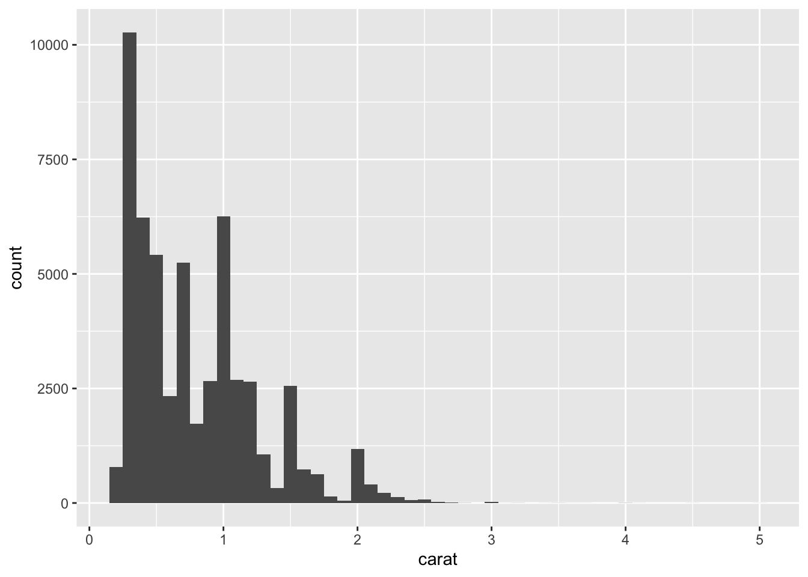
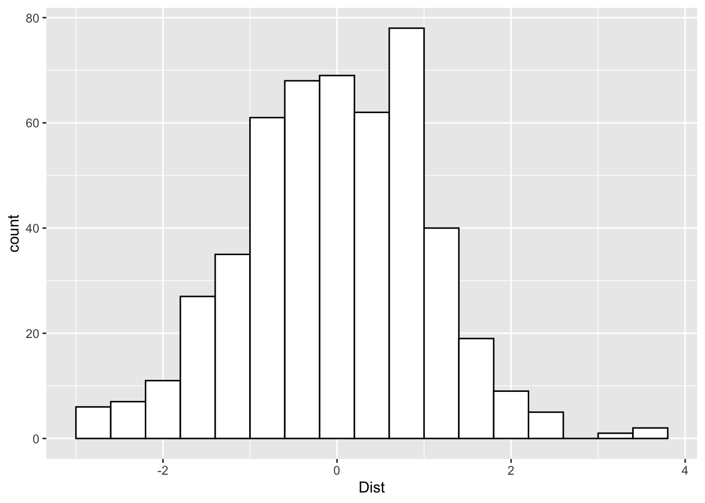
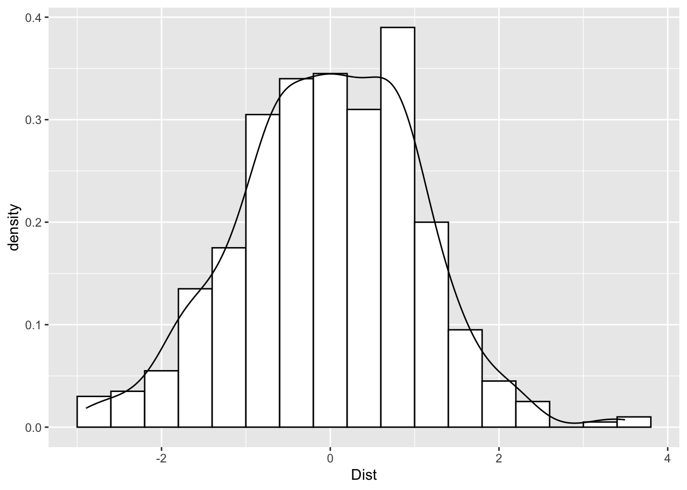
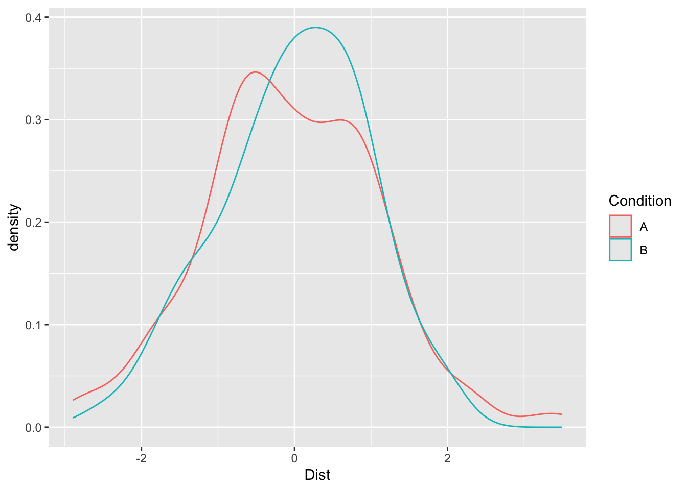

ggplot(data = diamonds) +
geom_histogram(mapping = aes(x = carat), binwidth = 0.5)
Note - this section is based on section 7.3 from R for Data Science
Remember that a continuous variable is a numerical measure of something that can take on a variety of different values at different levels of precision. One of the best tools for investigating a continuous variable like interval or ratio is to use a histogram. A histogram shows the variability that exists within a particular variable.
Let’s examine the “carat” variable from the diamonds dataset. Carat refers to the weight of a diamond. Here is how to make a histogram.
ggplot(data = diamonds) +
geom_histogram(mapping = aes(x = carat), binwidth = 0.5)
As a refresher, let’s talk through the code. ggplot gives us the primary command, followed by the data set we want to use in parentheses (). Then we use a new geom called geom_histogram with a mapping of the variable we are investigating, carat (mapping = aes(x=carat)). Finally we use binwidth to define how many intervals to divide the x axis.
Each of the bars represents the count or number of occurrences for a particular bin of numbers on the carat scale. So at first glance, it looks like most of the diamonds have a carat of about .25 to maybe .75.
We can adjust the binwidth to give us more information in the graph. Let’s make the binwidth smaller (0.5 to 0.1) to see a little bit more detail.
ggplot(data = diamonds) +
geom_histogram(mapping = aes(x = carat), binwidth = 0.1)
Notice that now we can see that actually .25 is the most frequently occurring carat with over 10,000 entries. Our range on the x axis is fairly large (0 to 5 carats), but notice that most of the carats are much lower on the scale. Carats above 2.5 carats seem to be outliers, which means that they don’t fit as well in the dataset or have more extreme properties compared to the reset of the dataset. This shouldn’t be surprising, because the diamonds with more carats weigh more, tend to be larger, cost more, and thus would be more rare.
Another adjustment we can make to see more detail is to adjust the dataset to just focus on a particular range of carats. Tidyverse allows us to create a different dataset based on a rule using what’s call the pipe |>
|> This is a special symbol the tidyverse uses to “pipe” or “filter” the dataset based on rules that are specified in the code. Another form of the pipe that is sometimes used looks like this %>%. Either way works, but the latest edition of R for Data Science uses |>, so we’ll stick with that.
Let’s take a look at the code to make a smaller version of the diamonds dataset.
smaller <- diamonds |>
filter(carat < 3)We’re creating a new object call “smaller” by taking the diamonds dataset and piping it (|>) through a filter function, which takes the variable “carat” and only chooses those observations that are less than 3 carats (carat < 3). So now we can just look at the diamonds with a carat of less than 3 and create a histogram to show us that variable.
ggplot(data = smaller, mapping = aes(x = carat)) +
geom_histogram(binwidth = 0.1)
Now we can see the variability that exists in this smaller range of carat values. Notice that .25 is still the most frequently occurring carat, followed by 1.00 and .75.
We can also take a variable like carat and overlay it with a second categorical variable. But rather than using a histogram we can use a simple line graph. In this case geom_freqpoloy creates a line graph based on a 2nd categorical variable. In this case we’ll overlay the carat variable with cut.
ggplot(data = smaller, mapping = aes(x = carat, color = cut)) +
geom_freqpoly(binwidth = 0.1)
Notice that most of the ideal diamonds are about .25 carats with premium having the second largest count at about .25 and 1 carats.
One of the more important histograms is called the normal curve. The normal curve has a particular shape in that it is symmetrical in relationship to the mean. A distribution (collection of scores) of a particular variable that is normally shaped will tend to have most of the scores in the middle of the distribution or fairly close to the mean.
To demonstrate this, let’s create a variable that is normally distributed and part of a dataset that has a second categorical variable. To do this, we can use the rnorm function to create this type of variable and include it with a categorical variable using the rep function.
Practice <- data.frame(Condition =
c(rep(c("A", "B"), each=250)),
Dist = rnorm(500, mean = 0, sd = 1))To get a quick look at the shape we can use the hist function, which is a simplified version of the histogram.
hist(Practice$Dist)
Notice that the bulk of the frequency of the scores are in the middle of the graph. This means they are closest to the mean, which for this data set is 0. Histograms also often include a curved line to show the shape of the distribution. For histograms this is based on what’s called density, which is based on the percentage or proportion of scores rather than the count. So we’ll change our histogram slightly and include the line.
hist(Practice$Dist, probability = TRUE)
lines(density(Practice$Dist))
So the greatest density or percentage of scores lies close to the mean and the lowest density is on the tails of the distribution. The tails are where the distribution tapers off to the left and the right.
Datasets may also be skewed, which means that the bulk of the scores is either more toward the higher end or lower end of the graph.

Skew is basically a measure of asymmetry in comparisong to the symmetry present in a normal curve. Negatively skewed histograms have a greater frequency of scores that tend to be larger and more extreme smaller scores at the left tail of the distribution. Positive skew is the exact opposite. Greater frequency of scores that tend to be smaller and more extreme scores at the right tail of the distribution.
Kurtosis is a measure of the “pointiness” of a data set. The more kurtosis the closer the scores are to the mean and less kurtosis the more spread out the data set.

There are a few different types of kurtosis.
We can also add density curves to our ggplots as well as analyze a categorical variable. First we can outline the bars in our histogram to show more detail.
ggplot(Practice, aes(x=Dist)) +
geom_histogram(binwidth=.4, colour="black", fill="white")
Then we can also add in the normal curve by using density rather than count for the histogram.
ggplot(Practice, aes(x=Dist)) +
geom_histogram(aes(y= after_stat(density)),
binwidth=.4,
colour="black", fill="white") +
geom_density()
It’s also possible to overlay two histograms based on a categorical variable, which divides the variable based on category.
ggplot(Practice, aes(x=Dist, fill=Condition)) +
geom_histogram(binwidth=.4, alpha=.5, position="identity")
Or you can use two curves to show the shape.
ggplot(Practice, aes(x=Dist, color=Condition)) + geom_density()